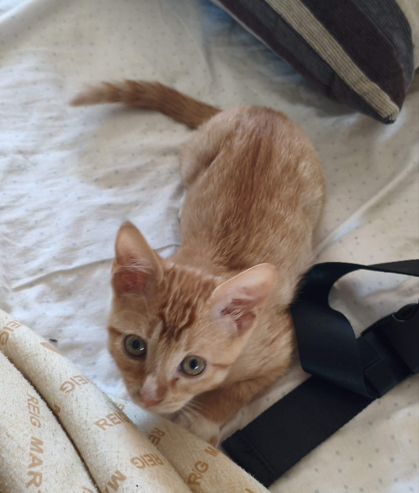

Carles Valladares García
Sobre mí
Benvingut/da al meu lloc ADWeb!
Soy Carles, estudiante del máster de Ingeniería Web y un valenciano que prefiere un Cachopo a una paella.
Además de informático, soy persona. Y en el resto de secciones podrás conocerme mejor. ¡Espero caerte bien!